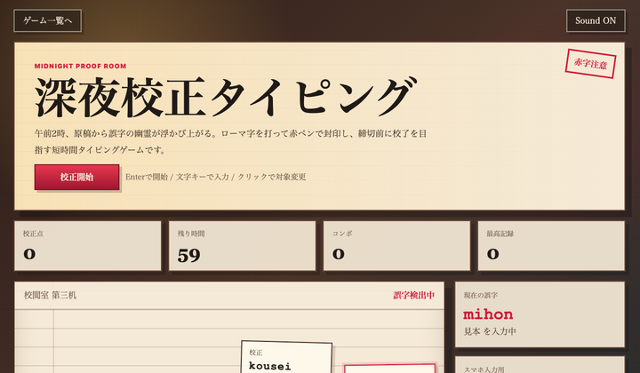
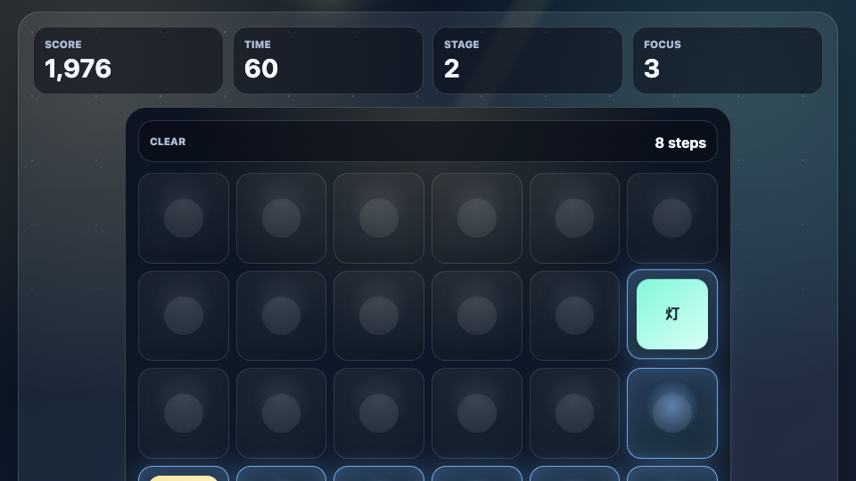
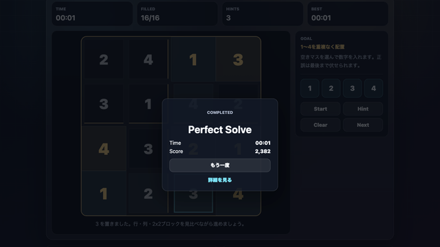
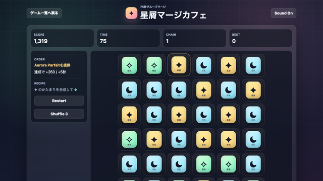

深夜の校正室で浮かぶ誤字をローマ字入力で封印する60秒タイピングゲーム。PCブラウザで短時間に集中できます。
短時間で遊べる ミニゲーム
1〜3分で一区切りつけやすい、軽い無料ミニゲームを集めました。
短時間ミニゲームでは、すぐ理解できるルール、やり直しやすいテンポ、プレイ後にもう一度挑戦したくなる手触りを重視しています。

深夜の校正室で浮かぶ誤字をローマ字入力で封印する60秒タイピングゲーム。PCブラウザで短時間に集中できます。

宇宙回転寿司で皿をタップし、アップグレードで売上を伸ばす1分クリッカー。無料ブラウザゲーム 暇つぶしとしてスマホ・PCで遊べます。

数字を見つけるだけのシンプル操作で、短時間で遊べるミニゲームとしてスコア更新を狙えます。

短時間で遊べるミニゲームとして楽しめるスライドパズル。夜祭りの灯籠絵を完成させます。

短時間で遊べるミニゲームとして楽しめる記憶力ルートパズル。光った道を覚えてなぞります。

短時間で遊べる ミニゲームとして楽しめる間違い探し。左右の星空シーンから違いを見つけます。

短時間で遊べる ミニゲームとして45秒で完結。文字色・文字読み・背景色を素早く判断します。

4x4盤面に1〜4を入れる短時間ミニ数独。スマホでもPCでも遊べる無料ブラウザ脳トレゲーム。

3つ以上つながった同じスイーツを選んで合成する75秒マージパズル。2048風の合成と注文ボーナスが楽しい短時間ゲーム。

流星を避けながら星粒を集める無料ブラウザアクションゲームです。

ネオン街で荷物を拾いながら障害物を避ける無料ブラウザランアクションゲームです。

針とゾーンを合わせて刃を鍛える無料ブラウザタイミングゲームです。

数字カードをクリックして合計10を作る無料ブラウザ数字パズルゲームです。

奇数と偶数を見分けて数字カードを正しい順番に並べる無料ブラウザ脳トレゲームです。

8レーンに流れるノーツを叩く無料ブラウザリズムゲームです。
目的や端末に合わせて、ほかの無料ブラウザゲーム入口も確認できます。